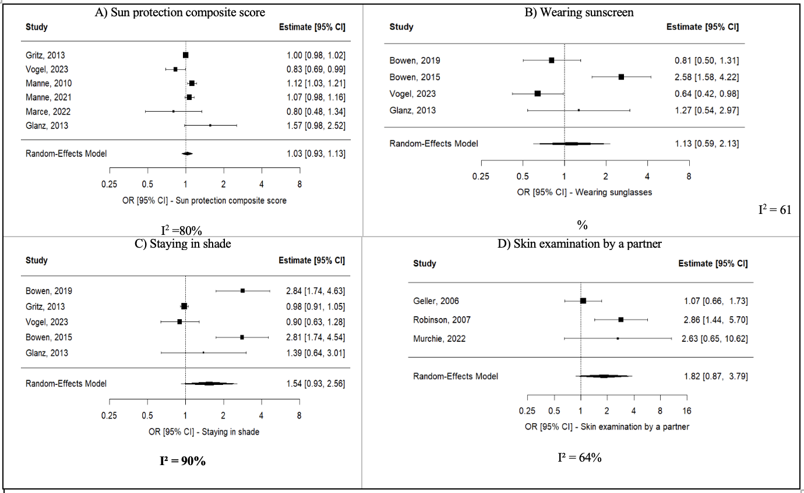
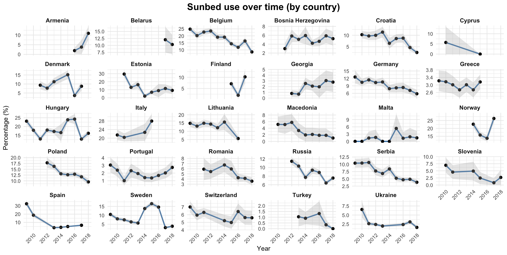

Abstracts presented at IARC@60
Two posters presented at the IARC@60 international conference, organised by the International Agency for Research on Cancer. Both works stem from collaborations within the Euromelanoma network and IEO research programmes.
Poster · IARC@60
Effectiveness of Skin Cancer Prevention Interventions in Melanoma Survivors: a Systematic Review
Melanoma survivors and their relatives are at increased risk of subsequent skin cancers. Despite evidence that simple behavioural changes can reduce risk, real-world uptake remains limited. This systematic review and meta-analysis examined RCTs evaluating prevention interventions in this high-risk population.
Systematic review and meta-analysis (PRISMA 2020). PubMed and Embase searched up to October 2025. 3,761 records identified; 17 RCTs included. Random-effects models; Summary Odds Ratio (SOR) with 95% CI. Risk of bias assessed with Cochrane RoB 2.
- Interventions significantly improved skin self-examination (SOR 2.05), limiting time outdoors (SOR 1.65), and wearing head protection (SOR 1.89).
- Effects on total cutaneous examination and shade-seeking were positive but not statistically significant.
- Control-arm design strongly influences observed effect sizes and heterogeneity.
- Device-based interventions alone showed no significant impact on any outcome.

Poster · IARC@60
Indoor Tanning: Prevalence, Trends and Determinants from the Euromelanoma Campaign
Indoor tanning devices emit UVA radiation classified as Group 1 carcinogen by the WHO. Regular use before age 35 increases melanoma risk by approximately 75%. Despite public-health efforts, European prevalence data remain fragmented. The Euromelanoma campaign (N = 391,489 participants, 30 countries, 2009–2018) provides a unique platform for behavioural surveillance.
Cross-sectional survey embedded in the annual Euromelanoma skin-cancer-awareness campaign. Multivariable logistic regression for determinants (adjusted OR with 95% CI); country included as random effect.
- Indoor tanning prevalence more than halved from 12.22% in 2009 to 5.89% in 2018.
- Female sex was the strongest predictor of use (OR 2.99), followed by age 20–35 years (OR 2.50).
- Higher prevalence in northern, high-latitude countries; each degree of latitude associated with OR 1.08.
- Sunbed use is shaped more by behavioural and cultural factors than by environmental exposure alone.
